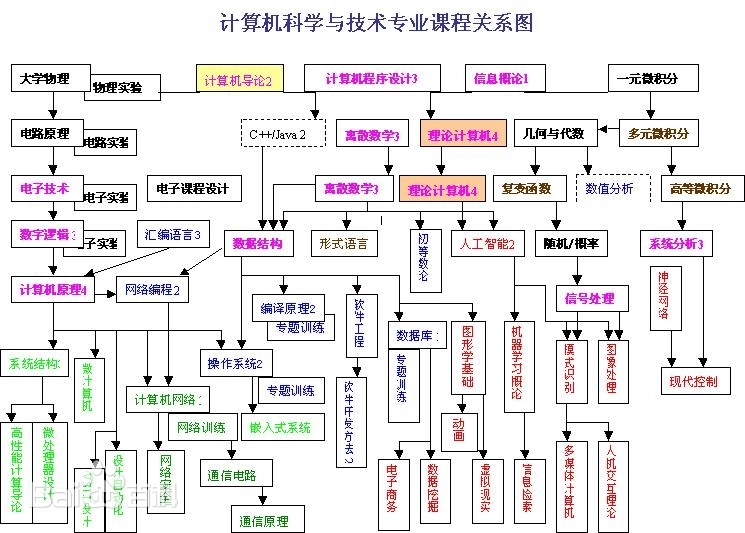

计算机学科即计算机科学与技术，是研究计算机的设计与制造和利用计算机进行信息获取、表示、存储、处理、控制等的理论、原则、方法和技术的学科。 包括科学和技术2方面。计算机科学侧重于研究现象揭示规律。计算机技术则侧重于研制计算机和研究使用计算机进行处理的方法和技术手段。 计算机学科方法论是对计算机领域认识和实践过程中的一般方法及其性质特点、内在联系和变化规律进行系统研究的理论总结。据研究，其主要内容包括3个形态：抽象过程、理论总结过程、设计过程。
⒈并行/分布处理及高性能计算机系统； ⒉先进的计算机结果和网络计算； ⒊系统的可重构和可扩展技术； ⒋高性能存储系统及处理机同步通信机制； ⒌并行编译技术； ⒍并行调试技术； ⒎并行与分布系统容错性、可用性、可靠性技术； ⒏指令及并行处理（ILP）体系结果的理论与技术； ⒐对称多处理器（SMP）并行体系结构的理论与技术； ⒑机群并行处理体系结构、互连技术、程序设计环境以及计算密集型应用在机群系统中的实现； ⒒超常指令字（VLIW）系统结构； ⒓多线程机制； ⒔并行处理技术； ⒕并行算法及环境； ⒖并行分布式算法； ⒗各种并行与分布式软件、工具与环境； ⒘分布式与多机系统新型计算机系统机构及语言； ⒙计算机系统体系结构软件仿真环境构建方法研究； ⒚当代主流并行机的体系结构模型、存储技术的研究； ⒛高性能通信机制与策略的研究； 21.分布式资源管理、故障恢复、进程动态迁移、分布式存取控制技术 22.指令级并行关键技术研究； 23.格点计算模型及体系结构的研究； 24.工作站机群、网络和网格等环境下的并行分布式计算模型； 25.可视化并行程序设计环境； 26.大规模科学与工程计算； 27.VLSI 系统机构及RISC技术； 28.芯片设计； 29.计算机支持的协同工作（CSCW） 30.嵌入式技术及其应用； 31.嵌入式系统整体设计方法、技术与应用研究； 32.嵌入式系统软硬件功能分配算法、软硬件协同验证、协同仿真方法研究； 33.嵌入式微处理器设计； 34.嵌入式操作系统； 35.计算网络及其应用； 36.高速互连网络； 37.网络计算环境下的知识处理、网络体系结构、网络管理； 38.多媒体信息在网络中的传输及处理； 39.高速计算机网络和网络服务质量； 40.网络互联、协议测试； 41.网络信息安全； 42.管理信息系统和网络信息检索； 43.新型高性能计算机系统及其软件技术； 44.计算机网络技术及应用； 45.智能卡技术； 46.信息安全与密码； 47.波分复用WDM全光网中的路由及波长分配算法的研究。遗传算法的理论和应用；
免疫模型与算法的基本原理及其应用；人工神经网络的理论和应用；
网络智能信息检索与数据挖掘。计算机软件研究方向：
⒈软件工程与方法；
⒉数据库和知识工程；
⒊计算机图形学与计算机辅助设计；
⒋数据安全。
⒌系统软件（操作系统、编辑系统、实时系统） ；
⒍软件工程及环境；
⒎分布对象计算；
⒏并行及分布式处理；
⒐语义理论及应用（自然语言、程序语言） ；
⒑推理技术；
⒒并行理论；
⒓类型理论及应用；
⒔计算语义学；
⒕CAD/CAM技术的理论研究、CAD/CAM系统的软件开发平台研制；
⒖工程与科学计算方面，对数值模拟进行的多学科的应用研究；
⒗计算机图形学与CAD；
⒘群件与网络技术研究；
⒙嵌入式数据库；
⒚电子商务；
⒛计算机网络及信息系统；
21.软件重建工程的理论与技术研究；
22.软件规格说明的形式方法与CASE工具研究。
23.形式化方法：形式语义、代数规范、范畴论、类型论和重写技术等的应用研究；
24.软件系统结构的研究；
25.程序设计语言的设计于实现．
26.可计算性和计算复杂性；
27.各种高效实用的计算模型；
28.一般难解问题的高效实用算法；
29.面向应用的大尺度难解问题的工程实用算法；
30.工程算法集成和相应软件体系结构；
31.工程算法分析和评价体系等。
⒈离散结构；
⒉程序设计基础；
⒊算法与复杂度；
⒋体系结构；
⒌操作系统；
⒍以网络为中心的计算；
⒎程序设计语言；
⒏人机互动；
⒐图形学和可视化计算；
⒑智能系统；
⒒信息管理；
⒓软件工程；
⒔社会与职业问题；
⒕计算科学于数值方法。